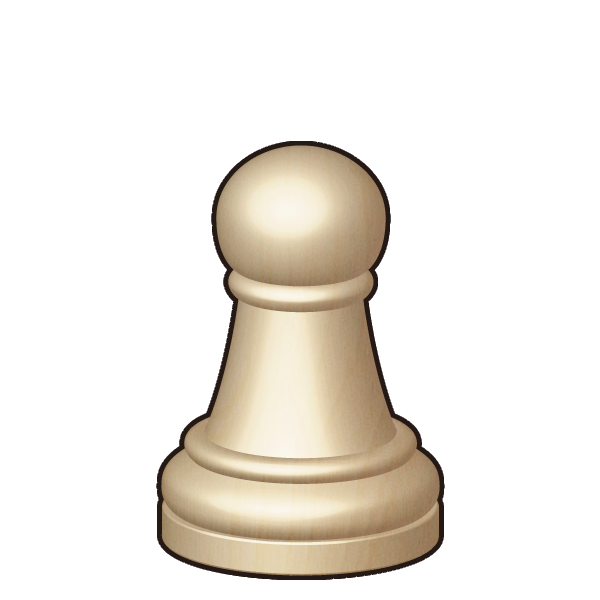
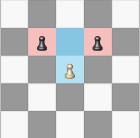
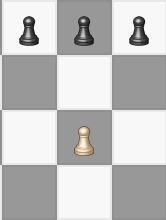
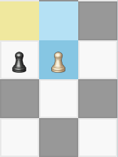
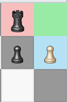

A pawn may advance one or two squares forward on its first move, but only one square forward for the remainder of the game. Pawns may capture opponent pieces one move forward in the diagonal only. Pawns may not move through other pieces.

Fig.1: Pawn move direction and capture
En passant capture may be made by a pawn when a player initially moves their pawn two squares, but had they only moved it by one square it would be under attack by the opposing player's pawn. In this case the opposing player may still capture the pawn as if it has only been moved by one square. This special capture can be made on the next turn only.

Fig.2: Before En Passant pre-condition

Fig.3: En Passant pre-condition
this occurs when a pawn is moved to a square of the last row on the opposite side of the board from which its color began. When this happens, the player must exchange the pawn for either a queen, a knight, a bishop or a rook of the same color, onto the square where the promotion occurs.

Fig.4: Example of pawn promotion pre-condition
Pawns are the only piece that do not have a specfic letter to identifiy them within algebraic notation representations of chess games. Rather, a move made by a pawn is signified by its lack of capital letter identifier.